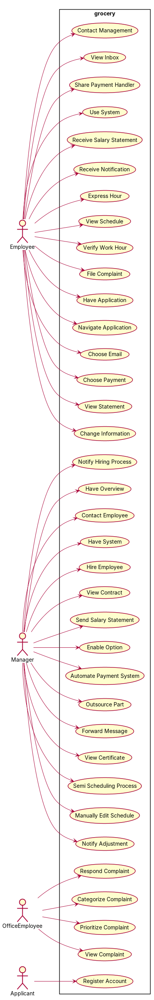
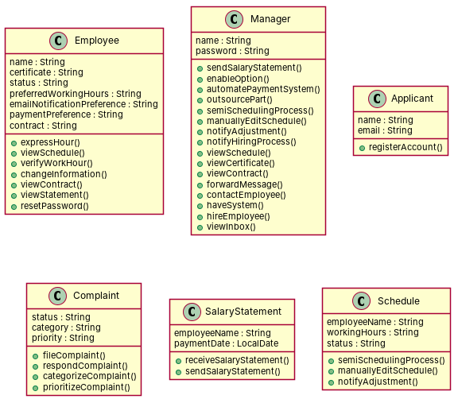

R1: As an employee, I want to receive my salary statement, so that I have a clear overview. R2: As a manager, I want to send salary statements, so that my employees have a clear overview. R3: As a manager, I want to enable the option for weekly and monthly payments for my employees, so that employee satisfaction rises. R4: As a manager, I want to automate the payment system, so that all payments are handled correctly and on time. R5: As a manager, I want to outsource part of the payment process, so that I do not have to worry about local payment regulations for each country. R6: As an employee, I want to receive a notification when my salary payment is handled, so that I stay up to date with my financial status. R7: As an employee, I want to express my preferred working hours, so that I am most likely to work on hours that best suit me. R8: As a manager, I want to semi-automate the scheduling process, so that the scheduling process is more efficient. R9: As a manager, I want to have the ability to manually edit the automatically-generated schedule, so that I can keep the operations running on busy days. R10: As a manager, I want to manually authorize the schedule before it goes live, so that I can ensure a correct schedule is being shared. R11: As a manager, I want to be notified as soon as manual adjustments need to be made, so that I can swiftly handle these adjustments and keep a clear overview. R12: As an employee, I want to receive notification when the new schedule is available, so that I can keep the scheduled hours free from other activities. R13: As an employee, I want to view the schedule at any given time, so that I can effectively keep track of my personal time. R14: As a manager, I want to view the schedule at any given time, so that I can effectively manage the employee presence on the work floor. R15: As an employee, I want the system to automatically verify my work hours, so that my salary statements are calculated accurately. R16: As a manager, I want the system to automatically verify employees' work hours, so that employees' salary statements are calculated accurately. R17: As an office employee, I want a separate complaint system with tickets, so that I don't have to filter through my email for complaints anymore. R18: As an employee, I want to be able to file a complaint regarding my workplace, so that my problems can be solved. R19: As a manager, I want to be able to file a complaint regarding my workplace, so that my problems can be solved. R20: As a manager, I want my employees to be able to file complaints regarding their workplace, so that employee satisfaction rises. R21: As an office employee, I want to be able to view all complaints, so that I can have an overview of the problems other employees face. R22: As a manager, I want to be able to view all complaints, so that I can have an overview of the problems my employees face. R23: As an office employee, I want to be able to respond to unsolved complaints, so that I can help the employees with their problems. R24: As an office employee, I want to be able to categorize complaints, so that there is an overview of the extent of problem areas. R25: As an office employee, I want to be able to prioritize complaints that require high management intervention to solve, so that important complaints will be solved swiftly. R26: As an employee, I want to receive a notification when my filed complaint is handled, so that I can stay up to date with the status of my complaint. R27: As a manager, I want to be able to quickly and effectively hire new employees, so that I can easily scale up our operations. R28: As a manager, I want to be notified when the hiring process of an employee is finished, so that I am up to date regarding the status of our new employees. R29: As a manager, I want to be able to have an overview of all our active employees, so that I can easily evaluate our employees. R30: As a manager, I want to be able to have an overview of all our absent employees, so that I can manually verify these absences. R31: As an applicant, I want to be able to register an account, so that I can finalize my hiring process and start working at the organization. R32: As a manager, I want to be able to view my employee's contracts at any given time, so that I have a clear overview of when extensions are due. R33: As a manager, I want to be able to view my employee's certificates at any given time, so that I have a clear overview of the qualifications of my employees. R34: As an employee, I want to be able to contact the management when needed, so that I can discuss important topics regarding my employment with them. R35: As a manager, I want to be able to contact an employee easily, so I can reach them when needed. R36: As an employee, I want to be able to use the messaging system to message other employees when needed, so that I can keep in touch with my colleagues. R37: As a manager, I want to be able to forward formal messages to employees in bulk, so that I can communicate with a big group of employees when needed. R38: As an employee, I want to view my personal inbox easily, so that I have a clear overview of important work-related information. R39: As a manager, I want to have one system with one login, so that I don't lose track of my account information. R40: As an employee, I want to be able to reset my password, so that I can always access my account. R41: As an employee, I want to have a user-friendly application, so that I can access all functionalities easily. R42: As an employee, I want to be able to navigate through the application easily, so that I can quickly see my schedule while riding. R43: As an employee, I want to be able to choose between email or application notifications, so that I can adjust my administration in the way that I prefer. R44: As an employee, I want to be able to choose between weekly or monthly payments, so that I can adjust my payment routine to my lifestyle. R45: As an employee, I want to be able to view my financial annual statements, so that I can easily find my financial information for filing taxes, etc. R46: As an employee, I want the information that is shared with the payment handler to be encrypted, so that my privacy is ensured. R47: As an employee, I want to be able to change my personal information, so that the information my employer has is always up to date. R48: As an employee, I want to be able to view my contract, so that I have a clear overview of important work-related information. R49: As an employee, I want the application as secure as possible, so that my data does not fall into malicious hands.
Red, struck-through: removed by ambiguity removal; green: added.
| actors (4 → 4) |
|---|
| applicant |
| employee |
| manager |
| office employee |
| classes (22 → 22) |
|---|
| Account |
| Adjustment |
| Applicant |
| Complaint |
| Contract |
| Date |
| Employee |
| EmployeeSatisfaction |
| HiringProcess |
| Hour |
| Manager |
| Notification |
| OfficeEmployee |
| Operation |
| Payment |
| Problem |
| SalaryStatement |
| Schedule |
| SchedulingProcess |
| Track |
| WorkHour |
| Workplace |
| attributes (5 → 5) |
|---|
| Complaint.status |
| Employee.certificate |
| Employee.group |
| Employee.qualification |
| Employee.status |
| relations (6 → 6) |
|---|
| has: Employee -> Contract |
| has: Employee -> HiringProcess |
| has: Employee -> Problem |
| has: Employee -> SalaryStatement |
| has: Employee -> WorkHour |
| has: Employee -> Workplace |
| id | req | type | cue | status | readings / explanation |
|---|---|---|---|---|---|
| A1 | R8 | incompleteness | efficient | rejected | The requirement is incomplete and does not provide enough context to determine a specific reading. |
| A2 | R10 | referential | it | resolved | the schedule that is about to be authorized; the schedule that is already live The use of 'it' could refer to the schedule before it is authorized or the schedule that is already live. |
| A3 | R13 | quantifier | any | rejected | The use of 'any' is ambiguous and does not provide enough context to determine a specific reading. |
| A4 | R14 | quantifier | any | rejected | The use of 'any' is ambiguous and does not provide enough context to determine a specific reading. |
| A5 | R20 | referential | their | resolved | their own workplace; the workplace of the manager The use of 'their' could refer to the employees' own workplace or the manager's workplace. |
| A6 | R23 | referential | their | resolved | their own complaints; the complaints of the manager The use of 'their' could refer to the employee's own complaints or the manager's complaints. |
| A7 | R27 | incompleteness | quickly | rejected | The requirement is incomplete and does not provide enough context to determine a specific reading. |
| A8 | R32 | quantifier | any | resolved | any of the manager's employees; any specific employee The use of 'any' could refer to any of the manager's employees or a specific employee. |
| A9 | R33 | quantifier | any | resolved | any of the manager's employees; any specific employee The use of 'any' could refer to any of the manager's employees or a specific employee. |
| A10 | R38 | incompleteness | information | rejected | The requirement is incomplete and does not provide enough context to determine a specific reading. |
| A11 | R39 | incompleteness | information | rejected | The requirement is incomplete and does not provide enough context to determine a specific reading. |
| A12 | R42 | incompleteness | quickly | rejected | The requirement is incomplete and does not provide enough context to determine a specific reading. |
| A13 | R43 | coordination | noun or noun | resolved | email notifications; application notifications The use of 'or' could refer to choosing between email or application notifications. |
| A14 | R45 | incompleteness | etc | rejected | The requirement is incomplete and does not provide enough context to determine a specific reading. |
| A15 | R46 | incompleteness | information | rejected | The requirement is incomplete and does not provide enough context to determine a specific reading. |
| A16 | R47 | incompleteness | information | rejected | The requirement is incomplete and does not provide enough context to determine a specific reading. |
| A17 | R48 | incompleteness | information | rejected | The requirement is incomplete and does not provide enough context to determine a specific reading. |
| A18 | R49 | incompleteness | data | rejected | The requirement is incomplete and does not provide enough context to determine a specific reading. |


"""Code skeleton generated from the shared model of D1/grocery.
Every class and method records the requirement(s) it traces to."""
from __future__ import annotations
import dataclasses as _dc
import enum as _enum
import typing as _t
@_dc.dataclass
class Employee:
"""Source: R1, R13, R15, R16, R26, R47, R48"""
name: _t.Optional[str] = None
certificate: _t.Optional[str] = None
status: _t.Optional[str] = None
preferredWorkingHours: _t.Optional[str] = None
emailNotificationPreference: _t.Optional[str] = None
paymentPreference: _t.Optional[str] = None
contract: _t.Optional[str] = None
def expressHour(self) -> None:
"""Realizes UC7 "Express Hour" (R7)."""
raise NotImplementedError
def viewSchedule(self) -> None:
"""Realizes UC13 "View Schedule" (R13, R14)."""
raise NotImplementedError
def verifyWorkHour(self) -> None:
"""Realizes UC14 "Verify Work Hour" (R15, R16)."""
raise NotImplementedError
def changeInformation(self) -> None:
"""Realizes UC26 "Change Information" (R47)."""
raise NotImplementedError
def viewContract(self) -> None:
"""Realizes UC27 "View Contract" (R32, R48)."""
raise NotImplementedError
def viewStatement(self) -> None:
"""Realizes UC25 "View Statement" (R45)."""
raise NotImplementedError
def resetPassword(self) -> None:
"""Realizes UC16 "Respond Complaint" (R23)."""
raise NotImplementedError
@_dc.dataclass
class Manager:
"""Source: R2, R3, R4, R5, R8, R9, R10, R11, R12, R14, R18, R19, R20, R21, R22, R23, R24, R25, R27, R28, R29, R30, R34, R35, R36, R37, R39, R40, R41, R42, R43, R44, R45, R46, R49"""
name: _t.Optional[str] = None
password: _t.Optional[str] = None
def sendSalaryStatement(self) -> None:
"""Realizes UC2 "Send Salary Statement" (R2)."""
raise NotImplementedError
def enableOption(self) -> None:
"""Realizes UC3 "Enable Option" (R3)."""
raise NotImplementedError
def automatePaymentSystem(self) -> None:
"""Realizes UC4 "Automate Payment System" (R4)."""
raise NotImplementedError
def outsourcePart(self) -> None:
"""Realizes UC5 "Outsource Part" (R5)."""
raise NotImplementedError
def semiSchedulingProcess(self) -> None:
"""Realizes UC8 "Semi Scheduling Process" (R8)."""
raise NotImplementedError
def manuallyEditSchedule(self) -> None:
"""Realizes UC9 "Manually Edit Schedule" (R9)."""
raise NotImplementedError
def notifyAdjustment(self) -> None:
"""Realizes UC10 "Notify Adjustment" (R11)."""
raise NotImplementedError
def notifyHiringProcess(self) -> None:
"""Realizes UC11 "Notify Hiring Process" (R28)."""
raise NotImplementedError
def viewSchedule(self) -> None:
"""Realizes UC13 "View Schedule" (R13, R14)."""
raise NotImplementedError
def viewCertificate(self) -> None:
"""Realizes UC33 "View Certificate" (R33)."""
raise NotImplementedError
def viewContract(self) -> None:
"""Realizes UC27 "View Contract" (R32, R48)."""
raise NotImplementedError
def forwardMessage(self) -> None:
"""Realizes UC28 "Forward Message" (R37)."""
raise NotImplementedError
def contactEmployee(self) -> None:
"""Realizes UC30 "Contact Employee" (R35)."""
raise NotImplementedError
def haveSystem(self) -> None:
"""Realizes UC31 "Have System" (R39)."""
raise NotImplementedError
def hireEmployee(self) -> None:
"""Realizes UC32 "Hire Employee" (R27)."""
raise NotImplementedError
def viewInbox(self) -> None:
"""Realizes UC34 "View Inbox" (R38)."""
raise NotImplementedError
@_dc.dataclass
class Applicant:
"""Source: R31"""
name: _t.Optional[str] = None
email: _t.Optional[str] = None
def registerAccount(self) -> None:
"""Realizes UC20 "Register Account" (R31)."""
raise NotImplementedError
@_dc.dataclass
class Complaint:
"""Source: R17, R18, R19, R20, R21, R22, R23, R24, R25"""
status: _t.Optional[str] = None
category: _t.Optional[str] = None
priority: _t.Optional[str] = None
def fileComplaint(self) -> None:
"""Realizes UC15 "File Complaint" (R18)."""
raise NotImplementedError
def respondComplaint(self) -> None:
"""Realizes UC16 "Respond Complaint" (R23)."""
raise NotImplementedError
def categorizeComplaint(self) -> None:
"""Realizes UC17 "Categorize Complaint" (R24)."""
raise NotImplementedError
def prioritizeComplaint(self) -> None:
"""Realizes UC18 "Prioritize Complaint" (R25)."""
raise NotImplementedError
@_dc.dataclass
class SalaryStatement:
"""Source: R1, R2"""
employeeName: _t.Optional[str] = None
paymentDate: _t.Optional[str] = None
def receiveSalaryStatement(self) -> None:
"""Realizes UC1 "Receive Salary Statement" (R1)."""
raise NotImplementedError
def sendSalaryStatement(self) -> None:
"""Realizes UC2 "Send Salary Statement" (R2)."""
raise NotImplementedError
@_dc.dataclass
class Schedule:
"""Source: R7, R8, R9, R10, R11, R12, R14"""
employeeName: _t.Optional[str] = None
workingHours: _t.Optional[str] = None
status: _t.Optional[str] = None
def semiSchedulingProcess(self) -> None:
"""Realizes UC8 "Semi Scheduling Process" (R8)."""
raise NotImplementedError
def manuallyEditSchedule(self) -> None:
"""Realizes UC9 "Manually Edit Schedule" (R9)."""
raise NotImplementedError
def notifyAdjustment(self) -> None:
"""Realizes UC10 "Notify Adjustment" (R11)."""
raise NotImplementedError
| python_compiles | True |
|---|---|
| java_compiles | True |
| attribute_mismatches | 0 |
| method_mismatches | 0 |
| use_cases | 36 |
| use_cases_without_actor | 0 |
| use_cases_without_method | 10 |
| actors_without_use_case | 0 |
| relations_to_unknown_class | 0 |
| inconsistencies | 10 |
| inconsistency_rate | 0.2174 |
| requirement_coverage | 1.0 |
| validator fixes | |
| assumptions for open ambiguities | [] |
| element | P | R | F1 | TP/FP/FN |
|---|---|---|---|---|
| classes | 0.714 | 0.5 | 0.588 | 5/2/5 |
| relations | 0.0 | 0.0 | 0.0 | 0/0/9 |
| use_cases_provisional | 0.972 | 0.795 | 0.875 | 35/1/9 |